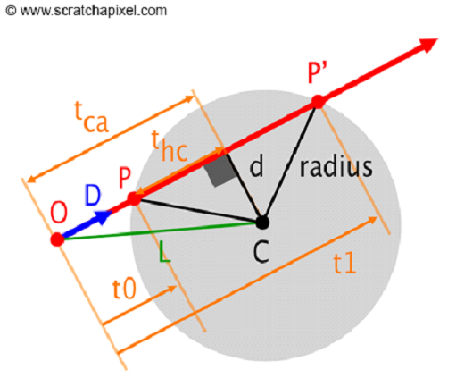

The goal for this week was to enhance the modification system to support a spherical volume of voxels rather than just individual voxels. The simplest implementation of this is to iterate over all the voxels in the scene and see which of those are less than the radius away from the sphere’s center. At the time, my voxel data structure didn’t actually store the positions of each voxel in any way. The positions could be deduced by traversing the octree, but that would be too slow for my purposes. Instead, I created another structure to store some extra information about each voxel, including the position (I didn’t modify the current structure since it gets uploaded to the GPU via Structured Buffer). The new structure, which I refer to as position map, has one entry for each node in the octree. The index of a node in the octree and the index at which the node’s position is stored in the position map are equal, so lookups are constant time.
Modifying Voxels Intersecting With the Sphere
After determining which voxels are inside the sphere you can flip their bit to remove/add them. Like modifying individual voxels, though, parent nodes need to be updated accordingly. If a root node becomes 0 it’s valid bit must be set to 0. This can cause a chain reaction of zeroing valid bits up the octree. Thus, we need to move up the octree and set bits accordingly. This requires us to know any given nodes parent node. In the individual voxel modification this is returned from the ray trace function. This modification scheme doesn’t ray trace each modified voxel, so this information needs to be calculated. Traversing the tree for each modified voxel and saving off each parent node is expensive. Since the parents never change, we’ll cache a parent pointer for each node in our position map. With this, it’s now possible to modify any arbitrary node and update its parents with O(logn) complexity.
Here's a demo of all of this working:
Sphere Ray Trace
I also added a sphere ray trace function to my pixel shader. This will be used to render an explosion effect before deleting voxels. The ray sphere intersection is determined with the following steps:
⦁ Determine your ray: R = O + D*T
⦁ Calculate the vector connecting P and the sphere's origin, C: L = C - P
⦁ Project the previous vector to your new ray: tca = dot(L, R)
⦁ Use this projection to calculate a new vector with your ray: T = O + D*tca
⦁ Calculate the vector connecting D and C: D = T - C
⦁ The length squared can be calculated with the dot product. d_squared = dot(D, D)
⦁ We can calculate thc using the Pythagorean theorem: thc = sqrt(radius_squared - d_squared)
⦁ We can now subtract thc from tca to get the t-value for the first intersection point, and add it for the second intersection point: P = O + D(tca – thc) P' = O + D(tca + thc)
 Ray sphere intersection diagram (credit: scratchapixel)